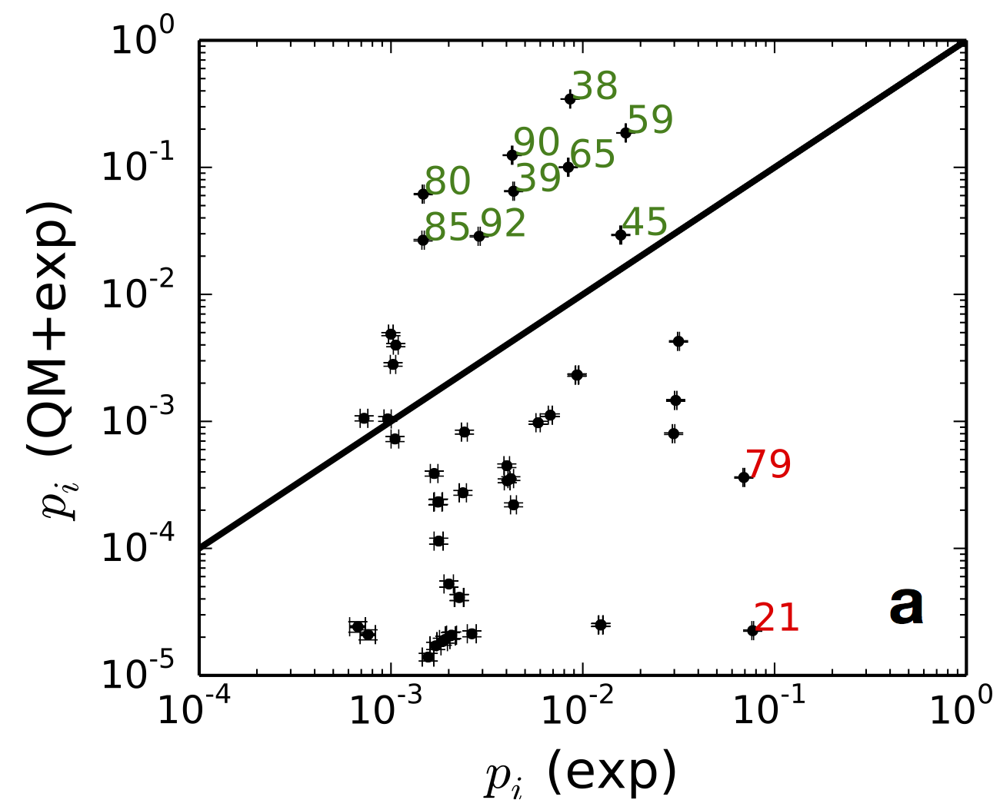
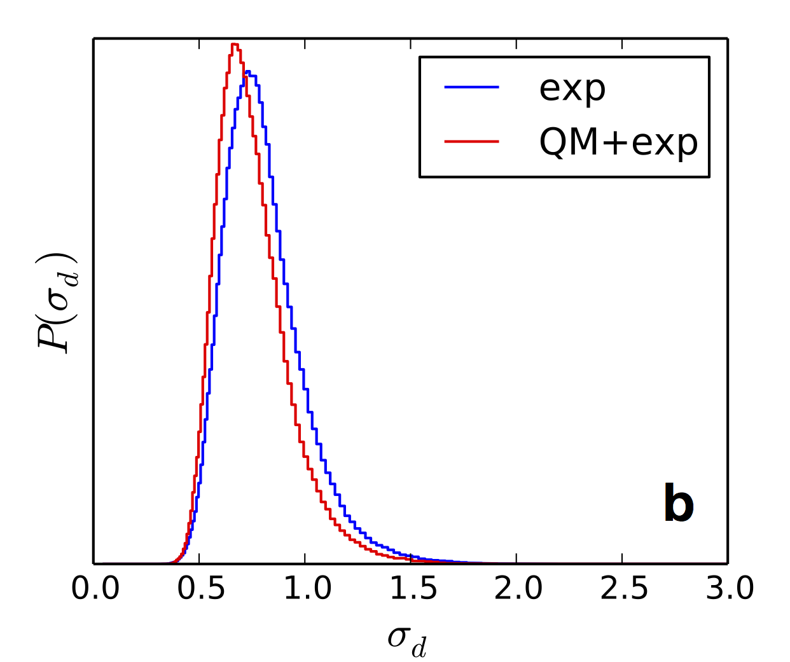

Bayesian inference of conformational populations
 Bayesian inference of conformational populations (BICePs) uses Bayesian inference to optimally combine computational predictions and experimental measurements to estimate conformational state populations. Features of BICePs include:
BICePs uses a Bayesian approach to infer a distribution of conformational populations, by sampling a posterior probability function
$$ P(X|D) \propto P(D|X) P(X) $$where \( X \) is one of a set of molecular conformations, and \( D \) represents the experimental data. \( P(X) \) is a prior probability function, estimated from computational methods as the predicted equilibrium populations. \( P(D|X) \) is a likelihood function representing experimental restraints. We assume normally-distributed errors in the experimental measurements, parameterized by a standard deviation \( \sigma \)
$$ P(D | X, \sigma) = \prod_j \frac{1}{\sqrt{2 \pi \sigma^2}}\exp(-[r_j(X)-r^{exp}_j]^2/2\sigma^2) $$ Since \( \sigma \) is undetermined, we treat it as a nuisance parameter, including it in the joint posterior of possible \( X \) and \( \sigma \).To correctly use the likelihood model as experimental restraints, a proper reference potential \( P_{\text{ref}}(\mathbf{r}(X)) \) must be used for the experimental observables \( \mathbf{r}(X) \)
$$ P(X|D) \propto \left[ \frac{P(\mathbf{r}(X)|D)}{P_{\text{ref}}(\mathbf{r}(X))} \right] P(X) $$The bracketed term is a potential of mean force (PMF) along the reaction coordinates defined by \( \mathbf{r}(X) \). The reference potential is needed to properly normalize the observed PMF. For distances \( r_j \), we conservatively model the reference potentials \( P_{\text{ref}}(r_j(X)|\beta_j) \) as exponential distributions whose first moments \( \beta_j \) are set to the estimated mean distance across all conformational clusters.
Markov Chain Monte Carlo is used to sample from the posterior distribution of conformations \( X \) as well as nuisance parameter(s) \( \sigma \) (and, for distances, scaling parameters \( \gamma' \), see our Voelz JCC 2014 paper).
A major advantage of BICePs is the quantitative estimatation of the Bayes factor, \( K_{BF} \), defined as
$$ K_{BF} = \frac{P(D|M_1)}{P(D|M_2)} = \frac{\int P(\sigma,X|M_1)P(D|\sigma,X,M_1)}{\int P(\sigma,X|M_2)P(D|\sigma,X,M_2))} $$The Bayes factor represents the strength of evidence in support of model \( M_1 \) over \( M_2 \), and is analogous to the likelihood ratio test used in classical hypothesis testing. Each integral is simply the expectation value of the posterior probability \( P(\sigma,X|D) \) for a given model over all values of \( \sigma, X \). Thus, if we consider joint energy functions \( E_1 = -\ln P(\sigma,X|D, M_1) \) and \( E_2 = -\ln P(\sigma,X|D, M_2) \), the Bayes Factor is given by $$ \ln K_{BF} = \ln \frac{\langle \exp(-E_1) \rangle_1}{\langle \exp(-E_2) \rangle_2}. $$
To efficiently compute \( K_{BF} \), we use the Multistate Bennett Acceptance Ratio (MBAR) method of Shirts and Chodera\cite{Shirts:2008ez} to estimate \( g_k = -\ln \langle \exp(-E_k) \rangle \) for any number of models \( M_k \), \( k=1,..,K \). The MBAR estimate \( \hat{g_k} \) is obtained by solving the self-consistent set of equations
$$ \hat{g_k} = - \ln \sum_{j=1}^K \sum_{n=1}^{N_j} \frac{\exp\left[-E_i(x_{jn})\right]}{\sum_{k=1}^K N_k \exp\left[\hat{g_k} - E_k(x_{jn})\right]} $$where \( x_{kn} \) is the \( n^{\text{th}} \) sample of \( (X,\sigma) \) from model \( M_k \). We commonly want to compute \( K_{BF} \) in the case where \( M_2 \) is a "null distribution" with no information from computation (i.e. a uniform \( P(X) \) ), and \( M_1 \) is the full posterior model. In this case, we sample multiple models \( M_k \) using priors \( P_k(X) \propto P(X)^{\lambda_k} \), for \( 0 \leq \lambda_k \leq 1 \).
The primary citation for BICePs is
Bayesian inference of conformational state populations from computational models and sparse experimental observables Vincent A. Voelz and Guangfeng Zhou. Journal of Computational Chemistry, 35(30):2215–2224 (2014)
BICePs is written and maintained by Vincent Voelz (@vvoelz), to whom you can send questions and comments.